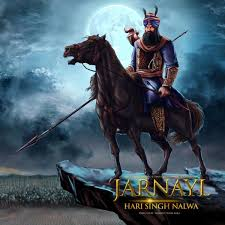

Who Was Hari Singh Nalwa?
Hari Singh Nalwa (1791–1837) was the commander-in-chief of the Khalsa army under Maharaja Ranjit Singh. Known for his valor and military genius, he protected the northwest frontier of the Sikh Empire and became a legendary warrior whose name struck fear into the hearts of Afghan invaders.

Early Life - Hari Singh Nalwa Ji
Hari Singh was born in 1791 in Gujranwala (now in Pakistan). His father, Gurdial Singh, died when he was just 7 years old. At a young age, he trained in martial arts, horse riding, and weaponry. He joined Maharaja Ranjit Singh’s army at the age of 16 and soon rose through the ranks due to his exceptional courage.
Military Career - Hari Singh Nalwa Ji
Hari Singh Nalwa played a crucial role in expanding and protecting the Sikh Empire. He led campaigns in Kasur, Multan, Kashmir, Peshawar, and Jamrud. His fearless leadership and innovative strategies helped secure the empire’s borders.
One of his most notable achievements was defeating Afghan forces and extending the empire up to the Khyber Pass. He is the only general in modern history who ruled the Afghan-controlled city of Peshawar.
Administrative Genius
Besides being a warrior, he was also a wise administrator. As governor of Kashmir, Hazara, and Peshawar, he introduced reforms, protected minorities, and ensured law and order in turbulent regions.
Fear Among Afghans
The Afghans were so terrified of Hari Singh Nalwa that mothers in Kabul would use his name to scare their children into behaving. His reputation for bravery and justice earned him the title of "The Lion of the Frontier."
Martyrdom at Jamrud
In 1837, while defending the Jamrud Fort against an invasion led by Afghan forces under Dost Mohammad Khan, Hari Singh Nalwa was gravely injured. Though he succumbed to his wounds, his presence on the battlefield inspired the Khalsa army to hold the fort and repel the enemy.
His martyrdom secured the northwest frontier for the Sikh Empire and became a symbol of ultimate sacrifice.

Legacy - Hari Singh Nalwa Ji
Hari Singh Nalwa is remembered as one of the greatest generals in Indian history. His bravery, loyalty, and leadership made him a symbol of the Sikh warrior spirit. Forts, schools, and streets are named in his honor across India and Pakistan.
Even today, historians regard him as a key figure in defending India from foreign invasions during the 19th century.